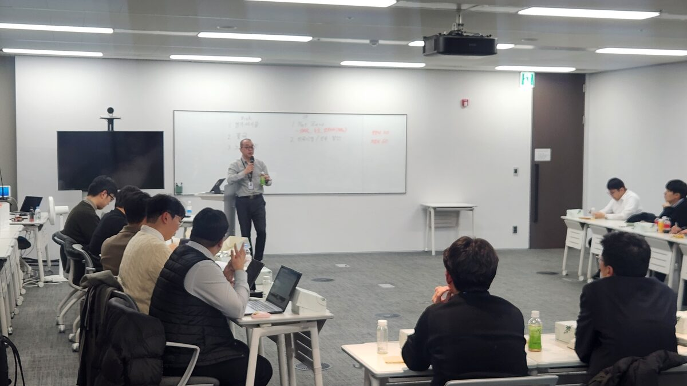
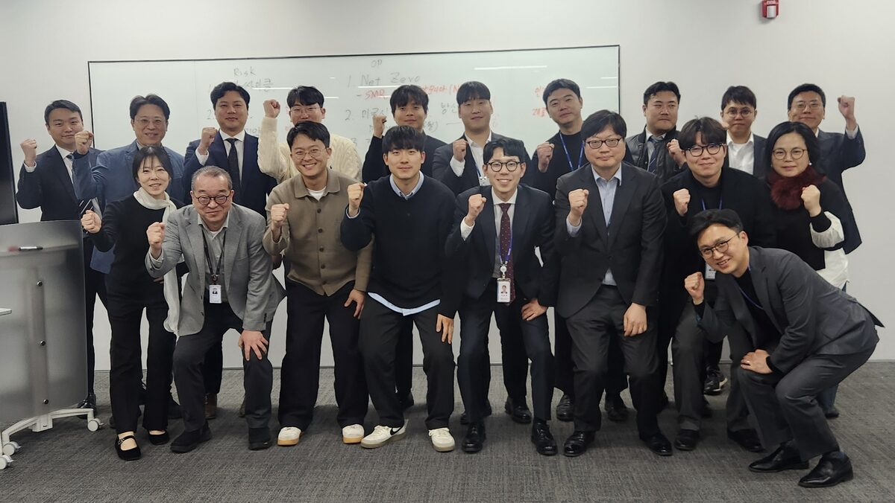

Atlas가 공장에 들어온 세상, 정치는 무엇을 준비해야 하는가.
모임 신청하기 →
에너지, AI, 조선, 방산, 핵심광물, 우주 — 기술이 정치를 만나는 곳에서 일하고 연구합니다.
전략기술이 국제정치·안보·외교와 교차하는 지점을 분석하고, 정부·산업·전문가와의 교류를 통해 우리의 역할을 탐색합니다.


국회 기술과 정치 연구회 첫 공식 모임을 진행합니다.
피지컬AI와 우리 삶의 변화에 대한 멤버들의 관심과 제안으로, 현대차 로보틱스사업실 최리군 상무님의 특강을 준비했습니다.
기술에 대한 이해를 넘어, 일자리와 소득의 변화 — 그리고 그 안에서 정치와 우리의 역할에 대해 이야기 나눕니다.
| 주제 | 피지컬AI와 로보틱스, 로보틱스랩의 도전 |
| 강연자 | 최리군 상무 · 현대차 로보틱스사업실 |
| 일시 | 2026년 4월 17일(금) 저녁 6시 |
| 장소 | 국회의원회관 제5간담회의실 |
* 특강 후 맥주 한 잔 예정입니다. 소액 회비 및 명함 지참 부탁드립니다.
4월 17일(금) 저녁 6시에 국회의원회관에서 뵙겠습니다.